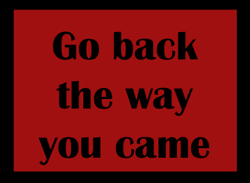
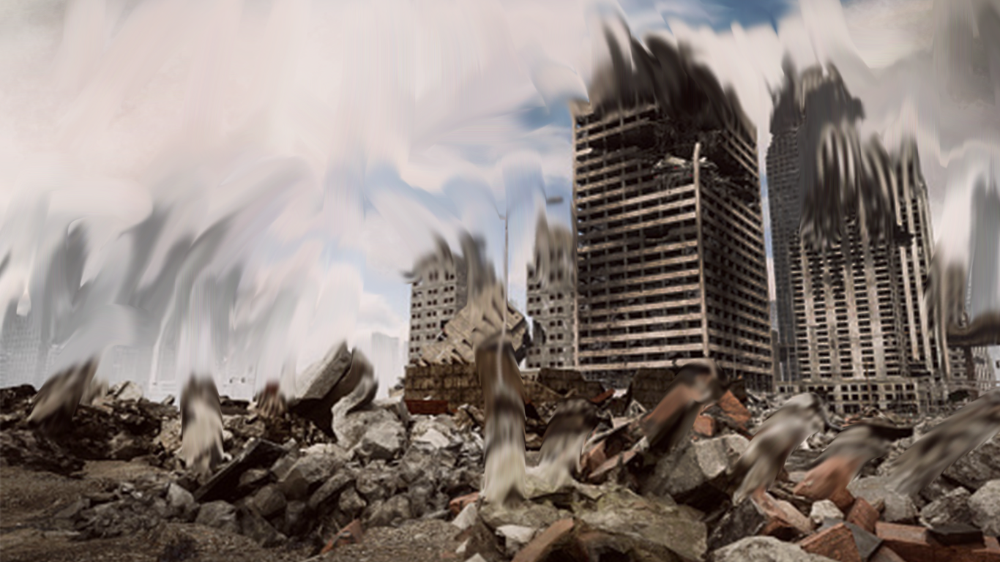
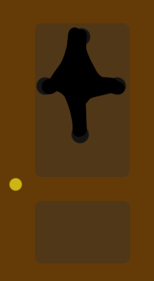
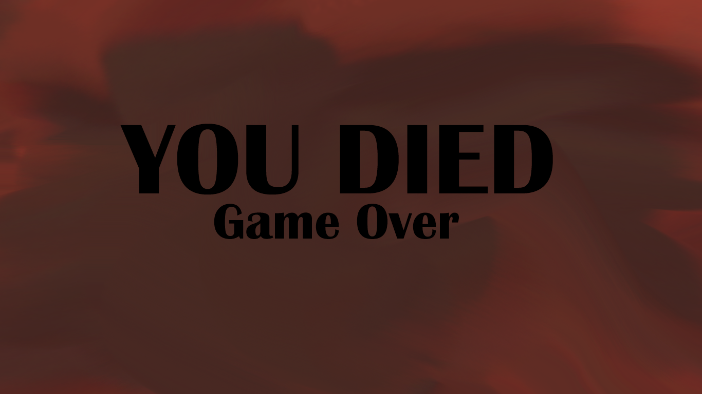

You pass the sign and approach a gate. You see a guard.
"I would turn back if I were you. There's nothing but despair in these lands." You explain that you want to help.
"If you must help, then find the lost master sword. It's said whoever can find the sword will dispell any evil in the land." You thank him for his advice, and start your quest for the master sword. You survey your surroundings. To the west is a forest. To the north is a wide open field. To the east appears to be a city. Which direction do you go in?
you approach the forest and as you get closer you hear the calls of animals as the darkness past the trees beckon you to join it. Nervous, you enter the line of trees. A couple minutes go by as you enter the forest and you feel yourself being watched. The hairs on the back of your neck start to stand. You check your surroundings but find nothing. Finally, you hear a voice
"Are you lost?" a voice asks "I can lead you to the master sword if you wish"
You look towards the voice and you see a figure hiding behind the trees.
"My name is Harriet. I sensed a person like you would come eventually..." she trails off. "Follow me if you wish to save this land"
you continue past the lady cautiously and go deeper into the forest. The sounds of the forest are starting to become more chaotic and you feel danger in the air.
You walk with Harriet through the forest. She's quick and jumps over fallen logs and through small gaps inbetween the trees. It was a struggle to keep up with her, but she always waited until you caught up with her.
Eventually you encounter a rigidity bridge that goes across a deep ravine. The air is heavy and you there's a feeling of nervousness in the air. "This is the furthest I've been. Past the bridge, you're on your own as far as I know," Harriet says.
You cross the bridge carefully. The wind blows violently and the bridge sways. As you move forward a couple of planks that you stepped on fall off. You realize if you stayed on them for a few seconds longer you would have fallen down with it. You pick up the pace.
You make it to the other side successfully and you collaspe on the ground to take a deep breath. After a few moments you collect yourself and press on.

You head straight through the trees and you find yourself at the edge of the forest. There, you see a large boulder that towers everything surrounding it. You approach it and find there are 3 symbols that look like they can be pushed in. Which do you push in?
you enter a field a vast empty field. The weather is cloudy and it's cold with the wind blowing towards you. There are no other sounds besides the howls of the wind. A few minutes later, you see a shape in the distance. You walk towards it and you see the shape also walking towards you. Eventually you make out it is a Lion. What do you do?
You calmly approach the lion with your hands behind you back while speaking sofly to the lion. You crouch down to it's level until you are just a couple of inches away from it's face. The lion approaches you and sniffs you. After the lion is done, it walks away from you. It looks back at you and makes a beckoning roar as it turned its head back forward. You seemed to have gained the lions respect.
The Lion guides you northwest. It's a silent walk but at least the wind has died down. Minutes go by and you and your guide approach some trees. The lion goes through them and you follow. However, the lion moves too fast through the trees and you cannot keep up. Eventually you lose him in the forest.
You wander the forest. As you go deeper the trees get thicker. The animals are getting louder and less sunlight is getting through the trees. You go back again only to realize that nothing is changing. You realize you are got lost in the forest
You enter the distorted ruins of the city. Windows are cracked, there's trash on the floor, and not a sign of life anywhere. The air is heavy here and you feel yourself go on high alert. After exploring, you hear a cry for help.
the lion sees you as prey, chases after you, and eats you.
You see a man getting jumped by walking skeletons. He tries to fend them off to no avail. You jump in to help and you are just enough to over power the skeletons and chase them away. You and the man made introductions and you find his name is Kenichi. After explaining your situation, he says he knows where to take you and says to follow him.
You decide it best to not follow the noise as it could be danger that is too much to handle. You press on within the city to see if you can ask anyone for help with the master sword. You wonder for what seems like hours. You get lost in the city
You two traverse the city and end up at a building with 3 doors. "This is the building that leads to the train station...except I don't know which door leads to it. They all lead someone else." Kenichi leaves as you stand before the doorways, which do you approach?
You open the door to a long, dim hallway. You can't see the end of it but decide to enter anywhere. A couple feet in the door shuts behind you. You keep walking but nothing is changing and it's been several minutes. Everything looks the same. The walls are starting to feel like they're closing in. You decide to turn back and pick up the pace. Eventually more time passes than before you turned around. You're trapped in an endless hallway.

you enter the door that leads down some stairs and into a train station, then all of you see a dog pop out at you. "Stop!" It yelps, "there are monsters ahead!" You peer around the corner and sure enough are patorling skeletons. There are enough objects in the way where you can probably sneak past them onto the train. What do you do?
You confidently and reckless charge onto the station ready to fight the skeletons. However, you do not have any weapons, and they do. They quickly over power you.
You carefully hide behind objects and traverse various between them and successfully make it onto the train. You head towards the front of the train and press the start button. An hour passes and the train stops. You exit the train station and you immediately see forest.
You hear something make a large crash above you. You look at the top of the rock to find a sword surrounded by a golden aura stuck within the rock. You get a gut feeling to get the sword. You climb the rock with your bare hands and finally make it to the top, out of breath with patches of scrapes across your skin. After you catch your breath, you approach the sword, you reach towards it, and grab the handle. You can feel the sword vibrate in your hands. You grab it tighter, and lift it out of the stone. After you do, a bright light shines out of the hole it came out of, and fills the space arround you. There's a feeling of calm in the air.
